Physiotherapy Services in Bareilly
Expert physiotherapy treatment by Dr. Devendra Gangwar at Lavanya Physiotherapy Clinic in Bareilly. Home visits and in-clinic sessions available.
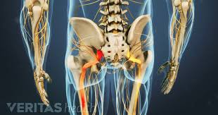
Sciatica Pain Treatment in Bareilly
Expert sciatica pain treatment in Bareilly. Sciatica is characterized by pain going down the leg from the lower back. Our physiotherapy helps relieve nerve compression and restore mobility.
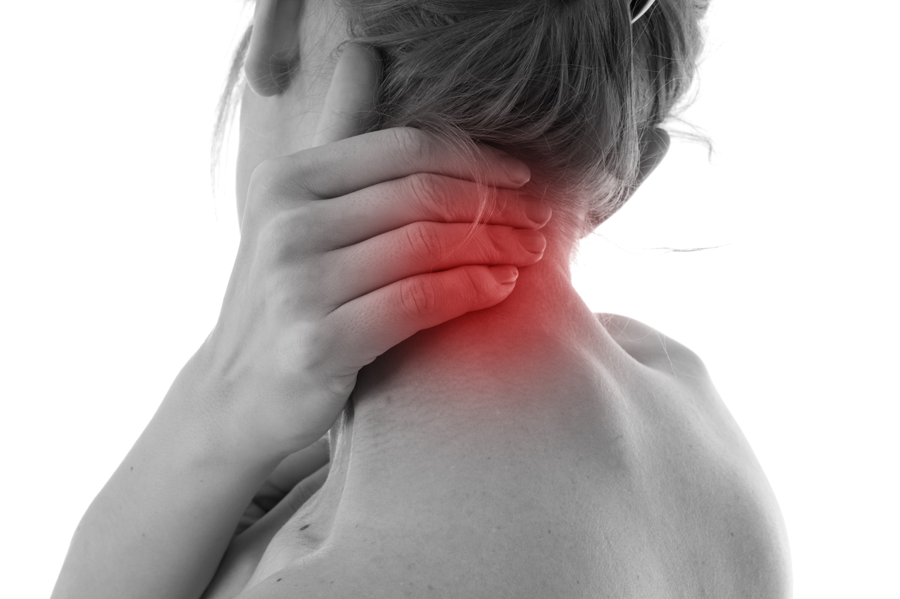
Neck Pain Treatment in Bareilly
Professional neck pain treatment in Bareilly. Lack of movement can cause neck muscles to become weak and stiff. Our physiotherapy techniques help restore neck mobility and reduce pain.
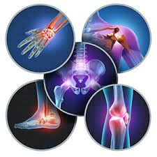
Joint Pain Treatment in Bareilly
Comprehensive joint pain treatment in Bareilly. Many conditions can lead to painful joints, including arthritis and injuries. Our expert physiotherapy helps restore joint function and reduce pain.
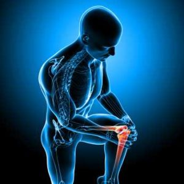
Knee Pain Treatment in Bareilly
Effective knee pain treatment in Bareilly. Knee pain can be caused by sudden injury, overuse, or underlying conditions. Our physiotherapy helps strengthen knee muscles and improve mobility.
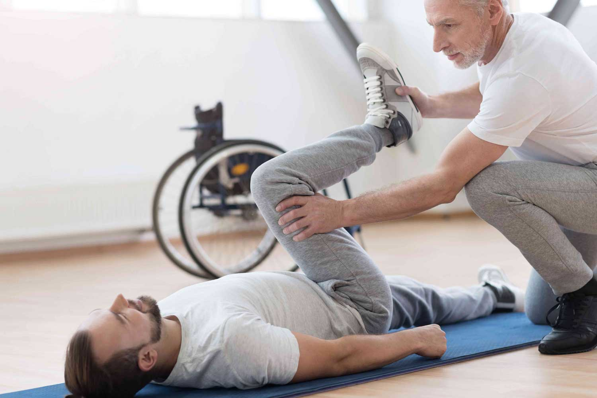
Paralysis Treatment in Bareilly
Specialized paralysis treatment in Bareilly. Mostly a result of damage to the spinal cord affecting the central nervous system. Our physiotherapy helps restore function and improve quality of life.
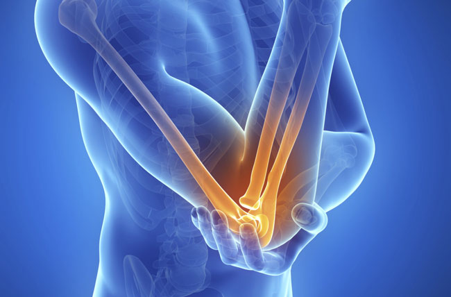
Tennis Elbow Treatment in Bareilly
Effective tennis elbow treatment in Bareilly. A condition where the outer part of the elbow becomes painful and tender. Our physiotherapy techniques help reduce inflammation and restore elbow function.
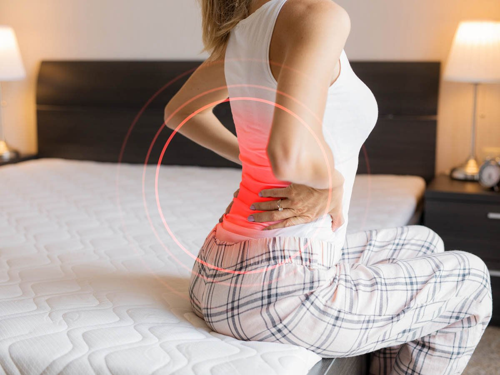
Back Pain Treatment in Bareilly
Expert back pain treatment in Bareilly. The most common causes are strain and problems with back structures. Our physiotherapy helps strengthen back muscles and improve spinal alignment.
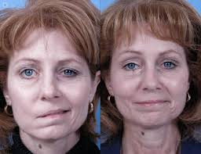
Bell's Palsy Treatment in Bareilly
Professional Bell's Palsy treatment in Bareilly. A condition causing temporary weakness or paralysis of facial muscles. Our physiotherapy helps restore facial muscle function and improve recovery.
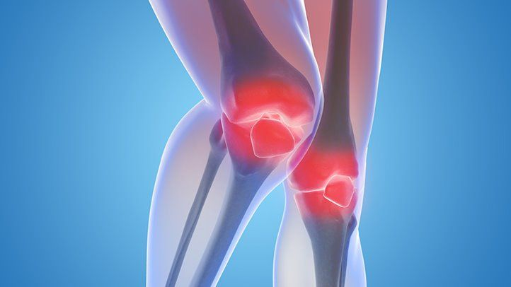
Arthritis Treatment in Bareilly (गठिया रोग)
Comprehensive arthritis treatment in Bareilly. Main symptoms are joint pain and stiffness that worsen with age. Our physiotherapy helps manage pain and improve joint mobility.
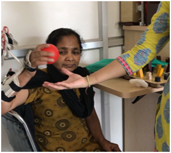
Fracture Stiffness Treatment in Bareilly
Specialized fracture stiffness treatment in Bareilly. When contact area between fracture surfaces increases, stiffness also increases. Our physiotherapy helps restore range of motion and flexibility.
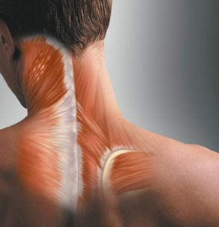
Muscle Spasm Treatment in Bareilly
Effective muscle spasm treatment in Bareilly. Often occurs due to stress, exercise, or dehydration. Our physiotherapy techniques help relax muscles and prevent future spasms.
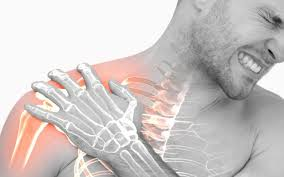
Frozen Shoulder Treatment in Bareilly
Expert frozen shoulder treatment in Bareilly. A shoulder condition that limits range of motion. Our physiotherapy helps restore shoulder mobility and reduce pain through targeted exercises.